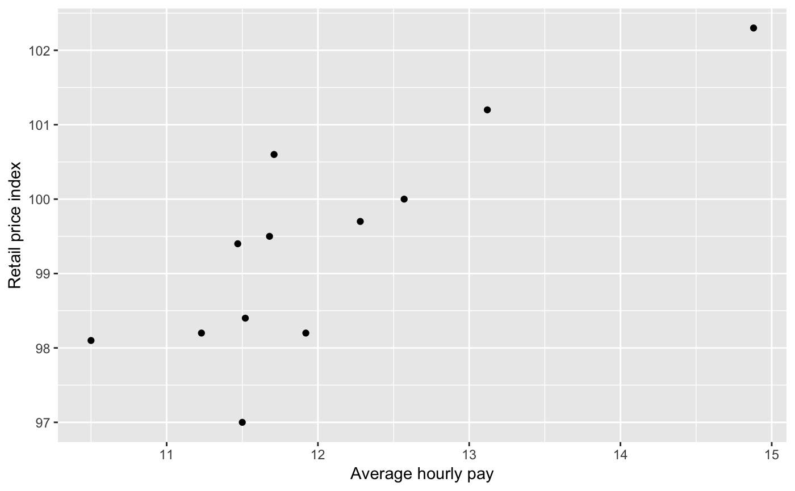

ukdemo.RdThis data set comes from the Guardian's Data Blog and includes five financial demographic variables.
A data frame with 12 observations on the following 6 variables.
Region in the United Kingdom
Average regional debt, not including mortgages, in pounds
Percent unemployment
Average house price, in pounds
Average hourly pay, in pounds
Retail price index, which is standardized to 100 for the entire UK, and lower index scores correspond to lower prices
The data was described in the Guardian Data Blog:
http://www.guardian.co.uk/news/datablog/interactive/2011/oct/27/debt-money-expert-facts
Posted: Thursday, October 27, 2011
Retrieved: Tuesday, November 1, 2011
Guardian Data Blog
data(ukdemo) library(ggplot2) ggplot(data = ukdemo, aes(x = pay, y = rpi)) + geom_point() + labs(x = "Average hourly pay", y = "Retail price index")